In Class Activity 1
AWS Account and IAM
Description
This submission documents the AWS IAM setup process, including the account alias update, IAM user creation, administrative permissions assignment, MFA configuration, and budget setup.
I signed in to the AWS account and opened the IAM dashboard. The account alias was updated to match the student ID format required for the assignment.
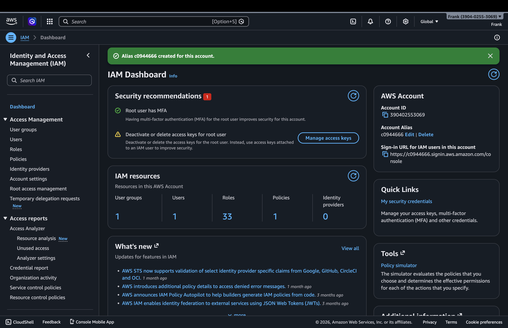
I opened the IAM user creation flow and entered the new IAM username Qi-Chen.
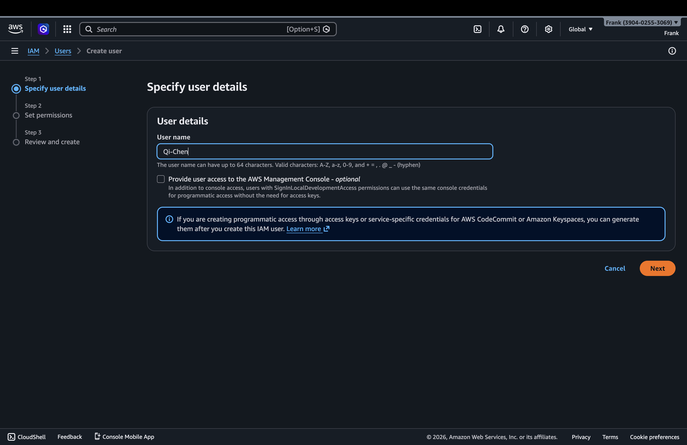
Next, I assigned the new user to an existing administrative group so the user would inherit full permissions through the attached administrator policy.
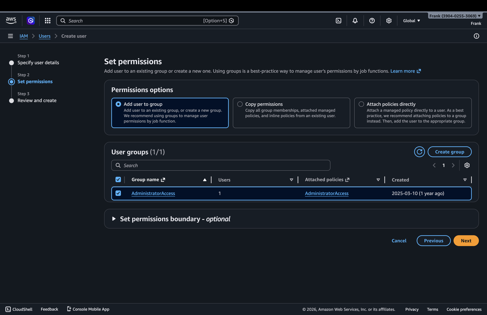
Before submitting, I reviewed the username and the permission assignment to confirm the configuration was correct.
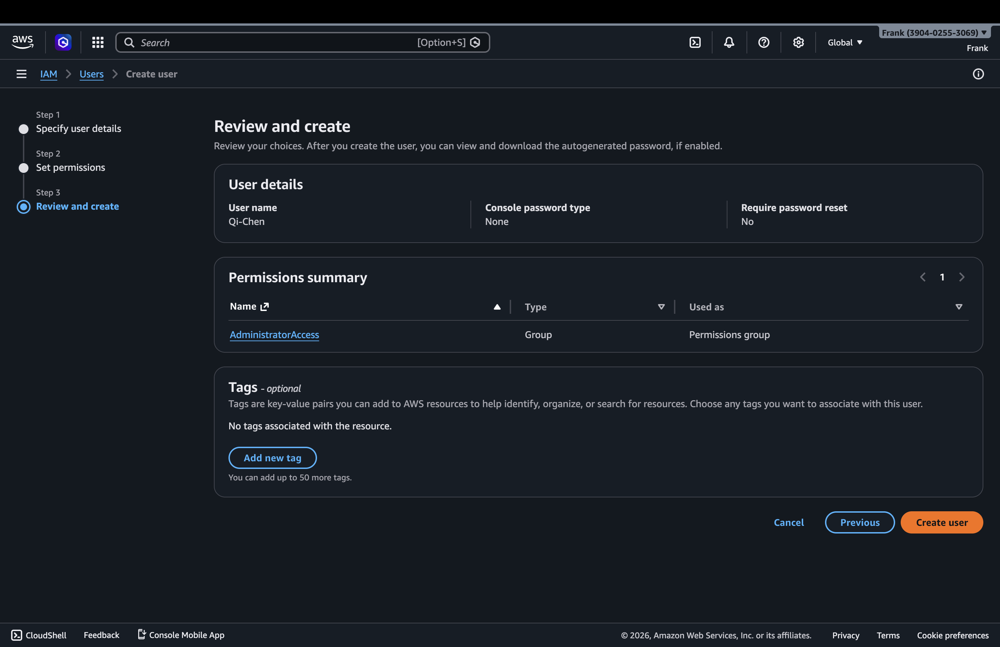
After the user was created, AWS displayed a confirmation message and the new IAM user appeared in the Users list.
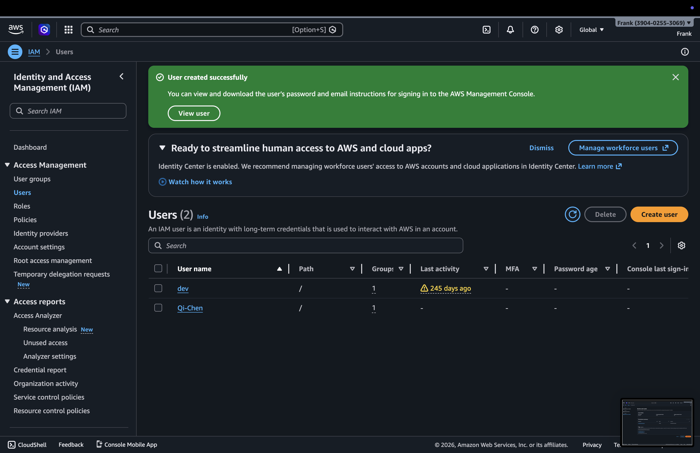
I opened the administrative group to verify that the correct permission policy was attached to the group used for the new user.
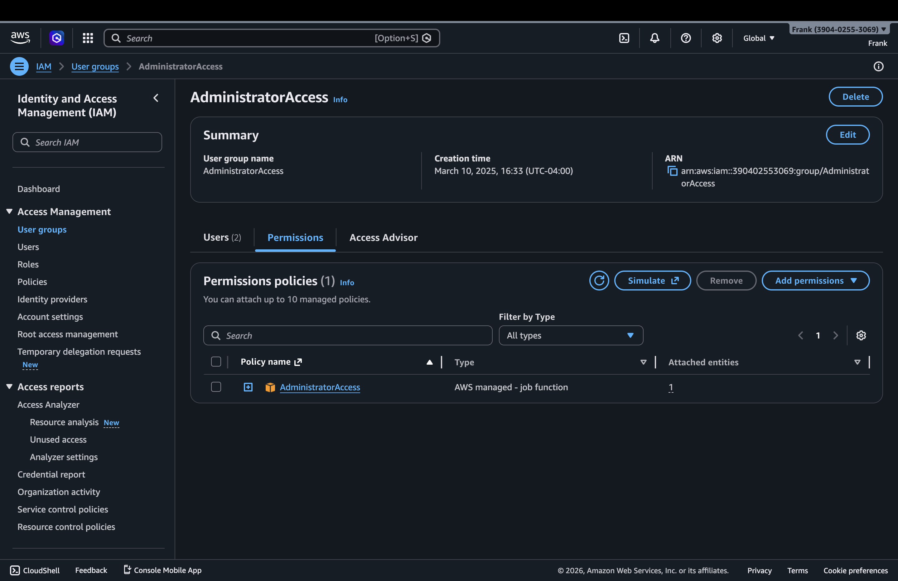
The administrator policy details confirm that full access is granted across AWS services.
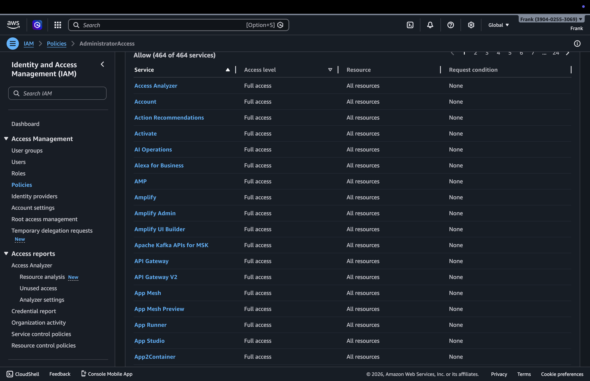
I then opened the MFA assignment flow for the IAM user and selected the authenticator app option.
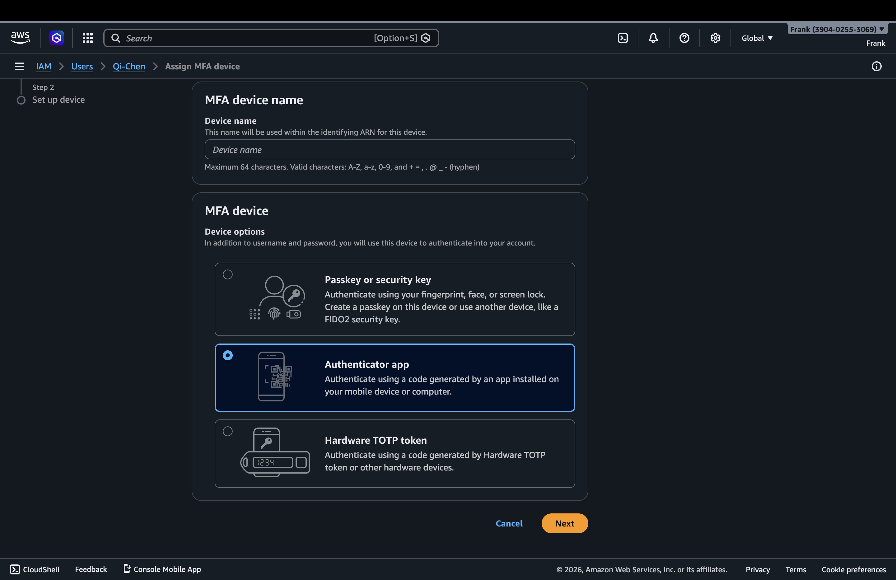
I provided a device name for the virtual MFA device and continued the setup process.
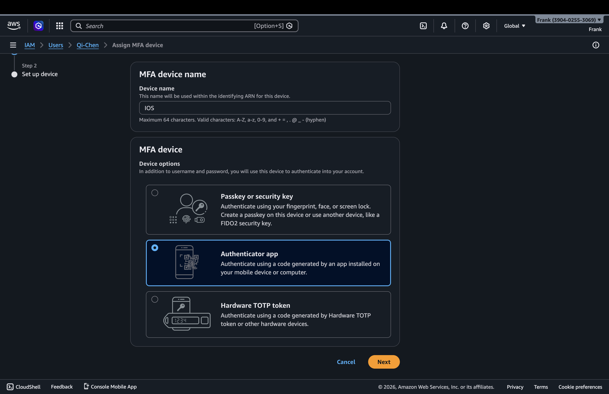
After completing the MFA registration, the user security credentials page showed the assigned virtual MFA device.
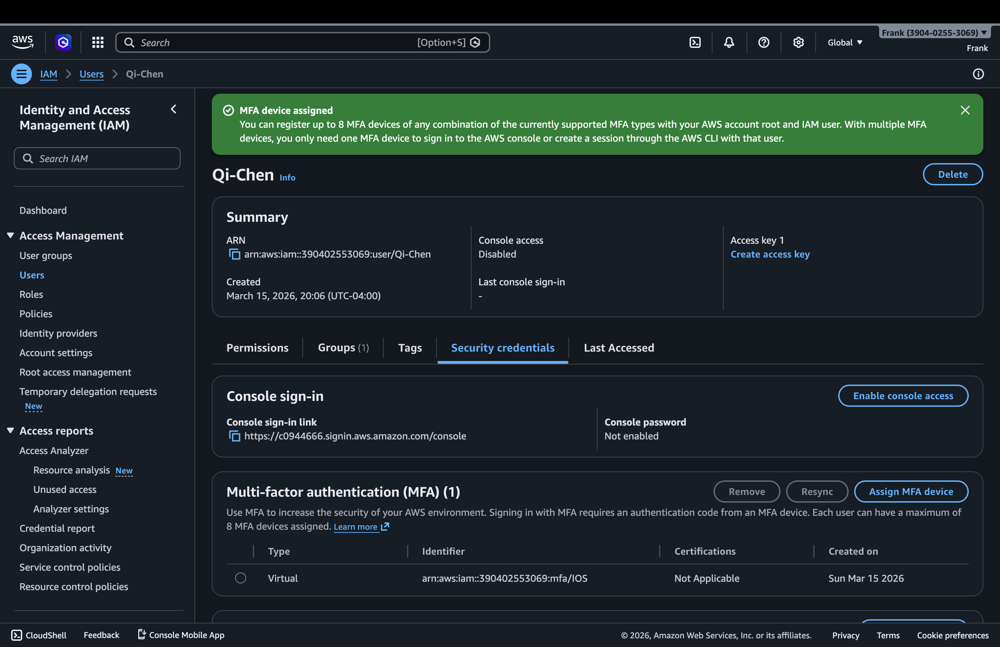
I created a zero-spend budget to help monitor unexpected charges on the AWS account.
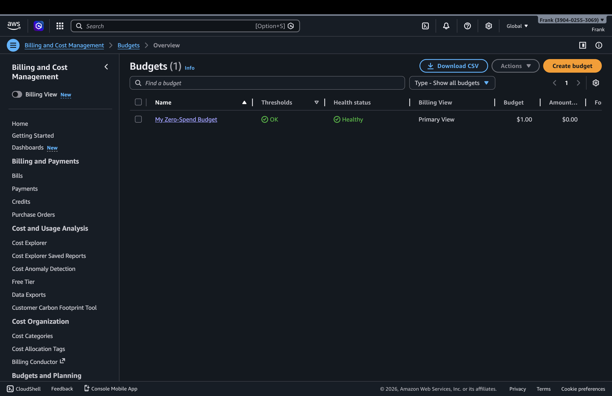
Finally, I created a monthly cost budget. The budgets overview shows both the zero-spend budget and the monthly budget in the account.
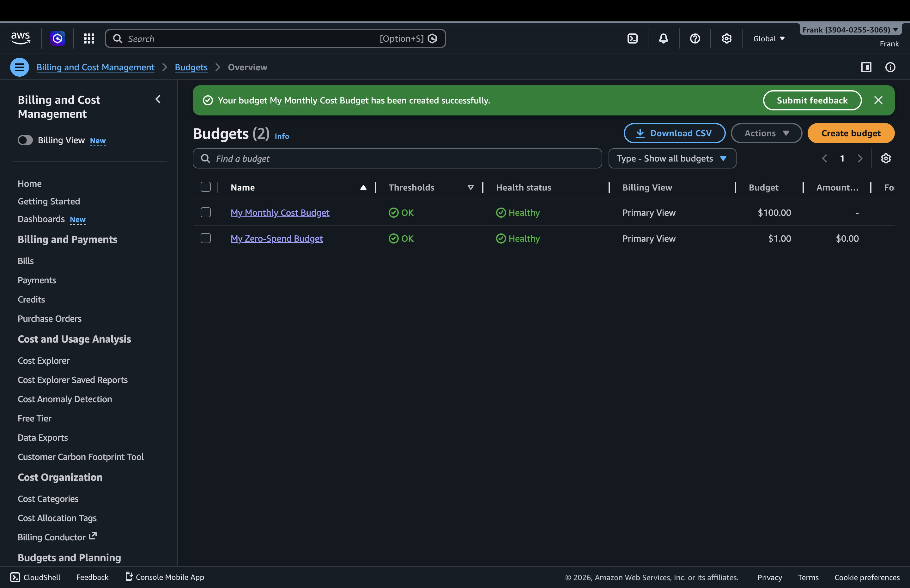
Conclusion
The AWS IAM activity was completed by updating the account alias, creating a new IAM user, assigning administrator-level permissions through a group, enabling MFA, and creating both a zero-spend budget and a monthly budget.
Student information has been filled in for submission.